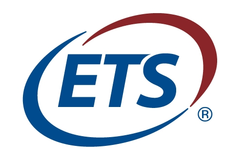

|
|
Software Engineer Co-op
January – June 2017
|
NantHealth
- Developed a Spring Boot application (Full Stack) using OAuth & OpenID Connect (OIDC) as part of
NantHealth Single Sign On project; managed redirects using Gluu Server as an identity and access
management suite for OIDC
- Extended functionality of NantHealth’s Identity Mapping Service, a Java application that stores
and provides user ID’s across NantHealth and third-party systems, to include additional user
information from JWT into SQL Server
- Updated Identity Mapping Service (IMS) in order to accommodate integration with an additional
third-party tool. Implemented changes in endpoints, databases, Python scripts, store procedures,
JWT, and RAML
- Researched and analyzed containerizing process of IMS using Docker and Rancher
- Developed scripts to generate authenticated requests to a 3rd party API
- Created registration scripts in Python that processed/validated user records and mapped IMS
users to 3rd party users
|

Software Development Life Cycle Intern (SDLC)
June – August 2016
|
Educational Testing Service
- Implemented SDLC guidelines including SDLC roles, Standard Artifacts, and SDLC Score cards
- Measured content compliance of 38 teams’ SDLC artifacts including Functional Requirement’s and
Application Deployment
- Tested and updated Reference Architecture Specification through communication with the RA and
SDLC teams as part of the Reference Architecture Scoring rollout
- Regulated application lifecycle management through commissioning/decommissioning applications
- Identified and analyzed errors caused by Application Deployment diagrams in PowerDesigner using
MS Excel
|
Co-Founder and Mentor
September 2014 – June 2015
|
Girls Who Code
- Spearheaded the founding of the club at Robbinsville High School
- Educated 20 – 30 high school girls on programming basics with weekly projects using Scratch and
Processing
- Encouraged girls to consider STEM career paths and served as positive role model
- Maintained list of enrolled students and used Macros to track progress and attendance
|